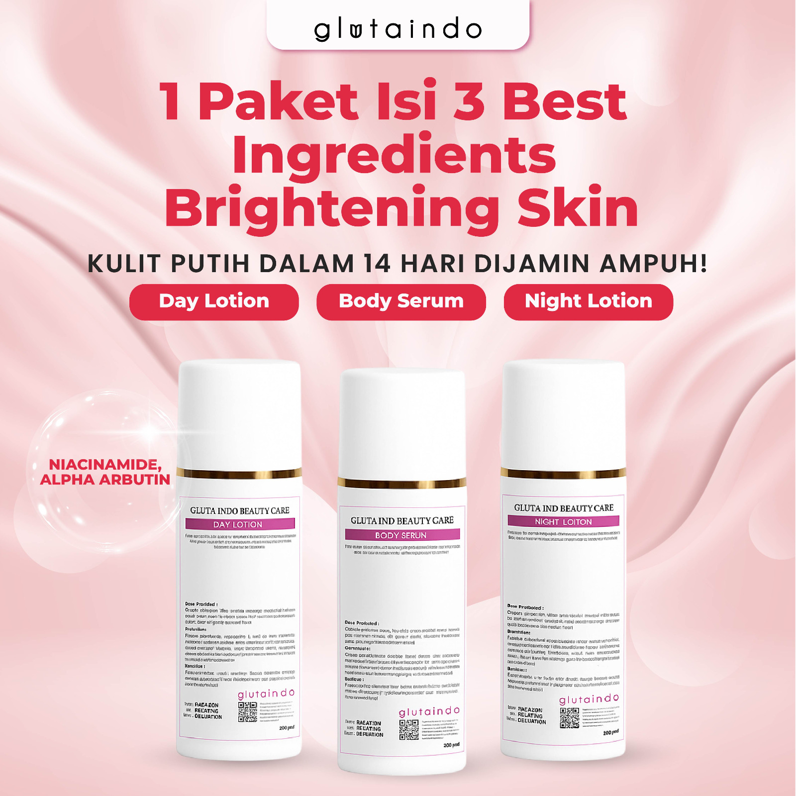
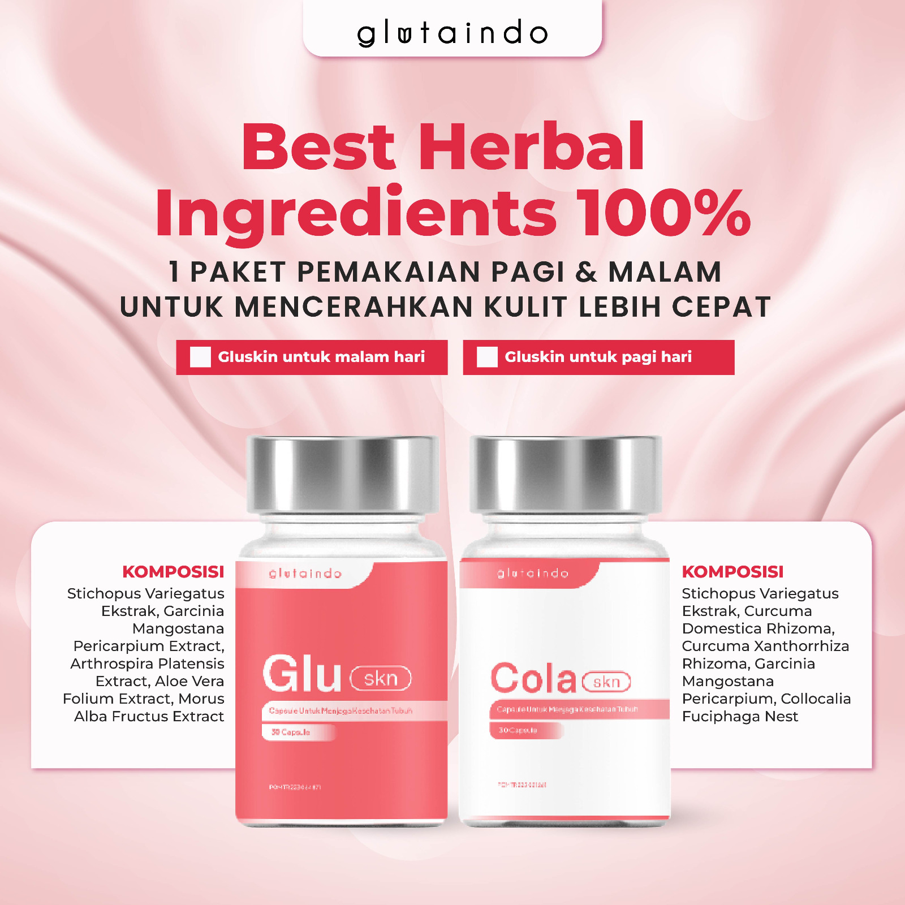

Membongkar Mitos: Mengapa Kulit Anda Tetap Gelap Meski Sudah Mencoba Berbagai Paket Pemutih?
Banyak wanita Indonesia merasa telah terjebak dalam lingkaran setan perawatan kulit yang tidak berujung. Setiap hari, ribuan orang mencari tempat yang jual paket pemutih badan di marketplace dengan harapan tinggi, namun seringkali berakhir dengan kekecewaan parah. Masalahnya bukan terletak pada jenis kulit Anda yang "badak" atau susah putih, melainkan pada ketidaktahuan industri terhadap mekanisme biologis kulit tropis.
Realita Pahit Industri Kosmetik Massal
Mayoritas produk pencerah badan yang dijual secara massal dengan harga murah hanya bekerja pada tingkat Strateum Corneum (lapisan kulit mati terluar). Mereka menggunakan bahan kimia yang hanya memberikan efek pencerahan visual sementara. Begitu Anda berhenti mengoleskan produk tersebut, kulit akan kembali ke warna asalnya dalam waktu kurang dari 48 jam. Ini bukanlah perubahan, ini adalah manipulasi visual.
Selain itu, paparan radiasi ultraviolet di Indonesia memiliki intensitas yang sangat tinggi. Radiasi ini merangsang melanosit untuk memproduksi melanin secara agresif sebagai bentuk pertahanan diri sel. Jika paket pencerah badan Anda tidak mengandung penghambat enzim tirosinase yang efektif, maka kulit Anda akan terus memproduksi pigmen gelap lebih cepat daripada yang bisa dicerahkan oleh lotion manapun. Inilah alasan mengapa Glutaindo Official hadir untuk mematahkan siklus kegagalan ini dengan pendekatan klinis yang jauh lebih dalam.
Sains di Balik Glutaindo: Mekanisme Perbaikan Selular Berbasis Herbal
Glutaindo Official tidak sekadar jual paket pemutih badan. Kami menawarkan sebuah protokol transformasi biologis. Kulit yang sehat dan cerah permanen memerlukan dua jalur intervensi utama: Perbaikan penghalang kulit (skin barrier) secara topikal dan modulasi sistemik dari dalam tubuh. Tanpa integrasi ini, kecerahan permanen hanyalah sebuah ilusi.
1. Brightening Body Care: Restorasi Epidermal dari Luar
Lotion Day & Night kami dirancang sebagai perisai dan agen perbaikan. Menggunakan kombinasi Niacinamide murni dan Alpha Arbutin, produk ini bekerja dengan cara masuk ke lapisan basal epidermis. Niacinamide terbukti secara klinis mampu meningkatkan sintesis ceramide, yang sangat penting untuk menjaga kelembapan kulit agar tidak mudah kusam. Sementara itu, Alpha Arbutin bertindak sebagai agen pemutus rantai pembentukan melanin tanpa menyebabkan iritasi seperti hidrokuinon.
- Menghambat transfer melanosom ke keratinosit.
- Melindungi dari kerusakan DNA sel akibat radiasi UVA/UVB.
- Meratakan tekstur kulit kasar menjadi lembut sehalus sutra.
Namun, kekuatan sesungguhnya dari Glutaindo terletak pada filosofi "Kecantikan dari Dalam". Banyak penjual yang jual paket pemutih badan hanya peduli pada apa yang Anda oleskan. Kami peduli pada apa yang mengalir dalam darah Anda. Inilah yang memisahkan Glutaindo dari produk marketplace standar yang tidak memiliki kredibilitas medis.
2. Glu Skn & Cola Skn: Detoksifikasi Selular dan Regenerasi Kolagen
Kami memanfaatkan kekayaan alam premium yang telah digunakan selama berabad-abad dalam pengobatan tradisional, namun diekstraksi dengan teknologi farmasi modern. Sarang Burung Walet (Collocalia Fuciphaga) adalah komponen kunci kami. Bahan ini kaya akan Sialic Acid yang berfungsi sebagai anti-inflamasi seluler dan pemicu regenerasi sel baru yang lebih sehat dan cerah.
- Xanthone Antioksidan: Berasal dari kulit manggis, berfungsi menetralkan radikal bebas yang menyebabkan "penggelapan" kulit akibat polusi.
- Epidermal Growth Factor (EGF): Merangsang pembelahan sel kulit baru yang kaya akan protein pencerah alami.
- Pencerahan Merata Seluruh Tubuh: Karena bekerja melalui aliran darah, hasil cerah akan terasa hingga area lipatan tersulit sekalipun.
Membangun Kepercayaan: Legalitas BPOM dan Ancaman Produk Merkuri
Sebagai otoritas dalam industri pencerah badan, Glutaindo sangat vokal dalam menyuarakan bahaya produk pemutih ilegal. Saat ini, banyak oknum tidak bertanggung jawab yang jual paket pemutih badan racikan tanpa nomor registrasi BPOM. Produk-produk ini biasanya mengandung Merkuri, Hidrokuinon dosis tinggi, atau Steroid. Efeknya memang instan, namun dampaknya fatal: mulai dari kegagalan ginjal, gangguan janin, hingga kanker kulit melanoma.
Glutaindo Official menjamin transparansi 100%. Seluruh rangkaian produk kami telah melewati pengujian mikrobiologi dan toksisitas yang sangat ketat untuk mendapatkan izin edar resmi dari **BPOM RI**. Kami bukan sekadar toko online; kami adalah distributor resmi yang memiliki tanggung jawab hukum dan moral terhadap setiap miligram produk yang Anda konsumsi dan oleskan ke tubuh Anda. Kepercayaan Anda adalah aset terbesar kami, dan kami menjaganya dengan integritas formulasi yang konsisten.
HENTIKAN EKSPERIMEN PADA KULIT ANDA!
Berapa banyak lagi uang dan waktu yang harus Anda korbankan untuk mencoba produk murah yang hanya memberikan harapan palsu? Kulit Anda adalah investasi masa depan. Menggunakan produk abal-abal hanya akan membawa Anda pada penyesalan panjang yang mahal harganya untuk diperbaiki.
PENAWARAN TERBATAS HARI INI!
Karena penggunaan bahan baku Sarang Burung Walet murni yang sangat langka, kapasitas produksi kami sangat terbatas setiap bulannya. Jangan sampai Anda harus menunggu stok bulan depan untuk memulai transformasi kulit Anda.
Dapatkan Paket Glowing Anda Sekarang*Pemesanan hari ini mendapatkan sesi Konsultasi Pakar Gratis senilai Rp 250.000 selama masa perawatan.
Kesimpulan: Masa Depan Kulit Cerah Anda Ada di Tangan yang Tepat
Mengalahkan persaingan produk massal di marketplace memerlukan kecerdasan dalam memilih kualitas. Glutaindo Official telah membuktikan diri sebagai garda terdepan dalam solusi pencerah badan yang aman dan permanen. Kami memahami anatomi kulit Anda, kami memahami tantangan iklim tropis, dan kami memiliki teknologi untuk menyelesaikannya secara tuntas.
Investasi pada paket pemutih badan herbal Glutaindo adalah langkah cerdas untuk mendapatkan rasa percaya diri yang selama ini tertunda. Berikan kulit Anda nutrisi yang layak ia dapatkan. Jadilah saksi bagaimana dalam 14 hingga 28 hari ke depan, kulit Anda akan bertransformasi menjadi lebih cerah, lebih sehat, dan memancarkan aura cantik yang sesungguhnya.
Glutaindo Official: Solusi Cerdas, Hasil Berkelas, Aman Tanpa Cemas.